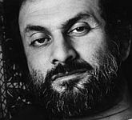

Nacemos dentro de una religión y aprendemos rápido el respeto hacia todas; por defecto. El mundo sobrenatural por estos lados caribeños y latinos suele tener el patrocinio católico y la mayoría es amiga de Jesús. Usualmente, monjas controlan las escuelas, abuelas adoran vírgenes y tienes que lidiar con misas, confesiones a curas y la comedera de hostias. Para el inmaduro cerebro infantil, ese que no es abusado creciendo, el globo transcurre normal pues la magia domina y los unicornios viven en los bosques.
Las neuronas, una vez adultas, te devuelven otra realidad. Te das cuenta que vivías en un planeta en guerra, contaminado, injusto y repleto de discriminaciones e intolerancias, tanto religiosas como no religiosas. El gobierno de paso idea normas y formas para mantener al pueblo callado y la revolución, como siempre, parece ser todavía la única salida. Conoces los varios circuitos de la represión, sus danzas, la forma en que entra y sale de una vida, manipulando la salvación de otros a través de la aceptación de sus ideas. “O haces lo que digo o mueres”.
El poder religioso, desafortunadamente, se ha valido de esa frase para imponer sus creencias. Ha conquistado, no sólo geografías terrenales sino cerebrales, erradicando creencias anteriores para imponer sus nuevas, muchas veces utilizando el sincretismo originado de un violento reclutamiento con el objetivo de conseguir más fácil lo que desea. Justamente, leer las ideas de otros permite atrapar historias, evidencias y hechos que muchas veces arrojan por debajo todo lo que te enseñaron al crecer y, déjenme decirles, es un viaje realmente extraordinario, un proceso gradual que muestra claramente la pasmosa mentira en la que subsistimos; fenomenal salir de todo eso.
Para ese proceso de maduración, la transmisión de información es absolutamente obligatoria. Una sola persona no puede pensarlo todo, es necesario el poder neuronal de parte de la especie a través del tiempo para conseguir el progreso; y, por supuesto, la transferencia del mismo. Sin embargo, la especie sigue encadenada a ciertos aspectos nocivos de su biología y de conocimientos primitivos. La tecnología evoluciona y se convierte en otro negocio, hay que luchar por un código abierto; la ciencia expande el conocimiento, erradicando mitos y rectificando errores, pero hay que luchar por una posición librepensadora. Dios es inexistente… pero no debes decirlo.
“Dios es una hipótesis y, como tal, necesita la prueba: el onus probandi * descansa en el creyente. Si deseamos explicar nuestras ideas de la Divinidad estamos obligados a admitir que, por la palabra Dios, el hombre nunca ha podido designar absolutamente nada, simplemente nombra así a las más escondidas, las más distantes y las más desconocidas causas de los efectos que ha visto; ha utilizado esa palabra sólo cuando el juego de las causas naturales y conocidas ha dejado de ser visible, tan pronto como pierde el hilo de estas causas o cuando su mente no puede más seguir la cadena, el ser humano corta la dificultad y finaliza sus investigaciones llamándolas Dios, el último de las causas, es decir, aquel que está más allá de todas las causas conocidas. Cada vez que decimos que Dios es el autor de algún fenómeno, eso significa que somos ignorantes de cómo ese fenómeno opera con la ayuda de fuerzas o causas que conocemos en la naturaleza”, explica Percy Bysshe Shelley en su libro La necesidad del ateísmo.
La transmisión de información tiene un valor inmenso. Ha sido esa capacidad para llevar y traer pensamientos que ha unido al ser humano, desafortunadamente, estas plataformas han sido muchas veces utilizadas para estupideces. La inmadurez de la especie la mantiene anclada a mitos, tanto arcaicos como modernos, que son transmitidos y mantenidos en libros, películas y televisión. Ahora, el internet ofrece otro medio para continuar transmitiendo referencias, pesquisas, indagaciones; puedes continuar enviando idioteces, superficialidades que alimenten los placeres de la especie, o te decides a ponerlos a pensar. Para algunos, la última decisión es la única que vale la pena, muchos se deciden por ambas, millones más sólo desean la primera. Sin embargo, no lograrás absolutamente nada si eliminas alguna, lo que tienes es que ofrecer la realidad y esperar. Pero esperar mucho.
Con la censura, sin embargo, no hay nada que esperar.
“Cada vez que asisto a una cena o almuerzo tengo que aceptar las bendiciones y las gracias a un Dios, sin chistar; si pongo algún pero la ofensora soy yo al romper el status quo. Las personas viven aferradas a ese respeto que deben recibir de todos los demás pero no piensan que en los demás hay otros que también tenemos derechos, también podemos sentirnos incómodos ante un evento así. Me parece que lo mejor para todos es que las creencias sean privadas, no sólo el ateísmo debe serlo”, cuenta para Sin Dioses Amy Toupin, neuróloga en Pittsburgh.
Efectivamente, el concepto de dios está en todos lados. Sus efectos no. La iglesia está presente en los gobiernos y las creencias son muchas veces parte de su constitución, aún no haya sido lo que sus fundadores desearon. En el himno de mi país, dios está presente; en los dólares estadounidenses, dios está presente; en las juramentaciones, su nombre y textos sagrados sirven como testigos. Cada comunidad tiene varios líderes religiosos, los matrimonios son mayormente procesados por iglesias y hasta las llegadas y salidas del mundo son patrocinadas por religiones y dioses; de hecho, la creencia en Dios es demandada en decenas de países a la hora de que alguien desee convertirse en presidente o alguna candidatura política.
Al inicio de la constitución dominicana, los asambleístas afirman que proclaman y redactan estas leyes fundamentales “invocando el poder de Dios”. La constitución del estado de Tennessee en Estados Unidos proclama que “un ateo no debe tener empleos civiles”, de hecho, “ninguna persona que niegue al ser Dios o un estado futuro de recompensas y castigos, no debe tener empleo alguno en el departamento civil de este estado”, afirman las leyes en estados como Texas, Arkansas, Carolina del Sur, Carolina del Norte, y Pennsylvania, entre otros. Luego de que George Bush fuera electo a la presidencia, después de afirmar que ningún ateo debe ser considerado ciudadano estadounidense, el consejero de la Casa Blanca en su gobierno, C. Borden Gray, escribió en respuesta a la famosa intolerante cita de Bush: “puedes estar seguro que la Administración procederá en todo momento atendiendo a los derechos legales de los ateos, así como con cualquier otro grupo con el que el presidente difiera”.
Pero las cosas son muy distintas. Estados Unidos es el país, entre naciones desarrolladas, más religioso. Como bien argumentó el neurocientífico y escritor Sam Harris, a pesar de que la religión y el estado están claramente divididas en la constitución de ese país, la religiosidad es parte íntegra de la vida estadounidense y de su política también. Las razones, muchas veces enlazadas con el miedo y el desequilibrio económico, no son claras.
“Cuando consideramos el aumento del islamismo por el mundo musulmán y la expansión explosiva de los pentecostales en África y la beatería anómala en Estados Unidos, nos damos cuenta de que la religión tendrá consecuencias geopolíticas por un largo tiempo”, escribe Harris en su libro The Moral Landscape.
Es importante transmitir información en medio de un mundo que alucina, creyendo en visiones y espejismos. Si consideras que Xenu es real pues estás en tu derecho de hacerlo, pero no por ello debes esperar ni que yo crea en él ni que deje de explicar por qué pienso que se trata de un disparate originado por algún delirio. ¿Por qué no? La humanidad merece que otros lo digan. Es muy placentero descubrir lo que estás buscando, muchas veces en respuestas que no fueron explicadas mientras crecías, hechos que continúan siendo obstaculizados en la actualidad.
No obstante, no parece importar que se involucren con la educación de tus hijos, con tu gobierno, con las tendencias culturales, que se lleven tu dinero sin impuestos. No importa que líderes religiosos manipulen todo un país con teocracias y que el Vaticano instruya contra el uso de la anticoncepción, de los condones, las células madre y se oponga a estilos de vida e identidades sexuales mientras defiende a sus pederastas criminales; no importa que los textos sagrados sean machistas y que sus denominaciones no estén de acuerdo con sus interpretaciones; no importa, lo que importa es que el ateísmo debe de ser respetuoso, es significativo que esta minoría de ateos vocales haga silencio, deje pasar todos esos absurdos con los que continúan reprimiendo a las masas, al final, no vamos a cambiar nada y sólo somos irreverentes, descorteses, inconsiderados.
Ah y, aparentemente, adoramos a Richard Dawkins.
Aparte de obviar los verdaderos objetivos y la importancia de ser un ateo vocal y fuera del clóset, estas personas sencillamente desean acusar a los ateos de actuar como fanáticos religiosos, obviando que, precisamente, son esos puntos débiles que los creyentes deben cambiar; puntos de los que nos acusan injusta e irracionalmente. Los ateos somos un grupo heterogéneo y avispado, hay muchos ateos que no soportan a Dawkins, hay ateos que andan en políticas varias, hay ateos que creen en visitas a extraterrestres, hay ateos que nunca han leído a ninguno de los conocidos jinetes del Apocalipsis, pero ninguno tiene un dios al que seguir, no nos une la existencia de algo sino que tenemos en común haber arrancado a los dioses sobrenaturales como existentes. Después de ahí, cada ateo es responsable de su vida, sin iglesias, sin profetas, sin líderes sobrenaturales e inexistentes, sin dogmas.
No venero a nadie, admiro ideas y acciones. Las debilidades humanas no deben borrar momentos de brillantez ni las genialidades deben convertir al ser humano en un objeto de idolatría. Todas las ideas están sujetas a cambios; aprende a adaptarte y no le temas al conocimiento; algún día no será necesaria la Lupa Herética, es probable que ni siquiera su autora esté viva, pero por ahora es indispensable que todo el que así lo desee, consiga canciones que vayan acordes a sus melodías.
La diversidad origina el justo laicismo
Antes de Hitchens estaba Sagan, antes de Sagan, Russell…
“Lo que digo es que si Dios quería enviarnos un mensaje, y escritos antiguos era la única forma en que podía pensar para hacerlo, pues pudo haber hecho un mejor trabajo”, aseguraba la doctora Ellie Arroway en el libro Contacto escrito por Carl Sagan.
“Si nuestro gran Dios pudo encontrar en su corazón conceder, usó esa palabra, conceder, que tres, sólo tres de los 360 ídolos en la casa vale la pena adorar”, escribió Salman Rushdie en el libro Los versos satánicos, ofendiendo a millones de personas y originando una orden de muerte contra él que lo alejó de su hogar para siempre.
“El hombre nunca estará libre hasta que el último rey no sea estrangulado con las entrañas del último cura”, expresó el filósofo Denis Diderot.
“Es un trabajo fraudulento realmente increíble una vez lo piensas, creer algo ahora a cambio por algo después de la muerte. Hasta las corporaciones con sus sistemas de recompensas no intentan hacerlo póstumo”, Gloria Steinem.
“Lo que puede ser afirmado sin pruebas, también puede ser descartado sin pruebas”, Christopher Hitchens.
La presencia de la crítica religiosa no es nueva. Hace mucho que el ser humano se dedicó a pensar, especialmente ante represores absurdos. En ciertas ocasiones ha sido acallada con violencia e intolerancia, en otras ha sido limitada por la distribución masiva y el valor atribuida a ella por los creyentes con poder. Cuando el individuo se dio cuenta de todo lo que podría ganar manipulando al otro ha utilizado, desde entonces, lo que está en su poder para conseguirlo y mantenerlo. Entre las herramientas más favorables para ello se encuentran la represión por medio de la violencia y el mantenimiento de la ignorancia a través de una restringida y tediosa educación. El poder y el dinero son los aliados perfectos en este asunto. De la única forma que termina la esclavización es cuando personas informadas se hartan de ello, cuando es posible concebir una revolución que acabe con las teocracias, un juicio verdaderamente justo. Pero estamos aún muy lejos de ello. No sólo porque en los periódicos de mi país todavía se leen titulares donde el diablo es el personaje principal sino porque en lugares como Estados Unidos, todavía líder en la producción científica en el mundo, encuentras amenazas, insultos y palabras psicópatas lanzadas a una chica atea de 16 años en una escuela pública en Rhode Island.
Todo comenzó cuando la escuela alzó una pancarta sobre la oración en el auditorio y a la alumna Jessica Ahlquist no le sentó bien, le pareció discriminatorio; así que pidió que la quitaran, cuando no fue escuchada, la chica lo llevó a juicio. El laicismo era su defensa y la ventaja de estar en un estado de libertades como lo es Rhode Island. La chica ganó el juicio y el juez ordenó que bajaran la pancarta y que no se publicitara ninguna religión como no se publicitaba el ateísmo ya que la escuela es un lugar público. Sin embargo, lo menos que le han deseado a la jovencita es que se queme en el infierno; un verdadero absurdo para personas que promueven la oración. Hasta a su hermana la han amenazado.
Tristemente, muchos religiosos no entienden el laicismo y piensan que el ateísmo está en contra de ellos; no comprenden la existencia de una jovencita que no pertenece a su club y desea que los derechos de ella también sean respetados. La meta de la chica no es fastidiar ni ofender, de la misma forma como la meta de los que alzaron la pancarta tampoco lo era. El mundo cambia (menos mal) y las libertades que todos disfrutamos no sólo pertenecen a la mayoría, son para todos. Aún así, cuando un ateo exige sus derechos el asunto no es el mismo, la avenida respetuosa se transforma en una sola vía: “yo me puedo ofender cuando exiges imparcialidad, pero tú no puedes ofenderte con mis dogmas porque son parte del status quo”.
Pero todo cambia, de eso podemos estar seguros; parafraseando al físico teórico y cosmólogo Stephen Hawking, el inteligente es el que se adapta. Y tendrán que adaptarse también a los ateos fuera del clóset que les gusta hablar, escribir, debatir, transmitir. Sólo esperamos que las voces no tengamos que apagarlas para alejar la violencia, las injusticias e intolerancias y para mantenernos con vida…nunca más.
- *
-
Onus probandi: Carga de la prueba. [N. Ed.]
Volver al índice de la Lupa Herética
© 2008-2023 Glenys Álvarez y Sin Dioses. Prohibida la reproducción con fines comerciales.
Comentarios
Comments powered by Disqus